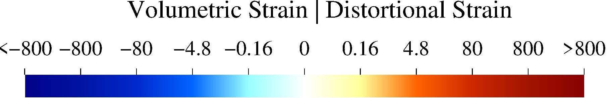
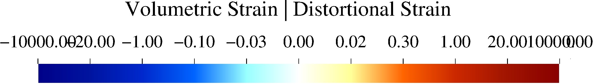

7.21 zdemss¶
- 说明:
绘制应力应变。
- 使用方法:
zdemss [可选项]
例如 zdemss --dir ./datass ，将 ./datass 目录中的数据绘制成云图。前提，已经采用 zdem -s ./datass 计算了应力应变数据，数据已默认保存到了 ./datass/ss/data 中，见 zdem 。 zdemss 完成应力应变绘制，生成的目录结构如下：
./datass/ss/data该文件夹保存了 zdem 输出的颗粒位置和(假)应力的原始数据
./datass/ss/data2ps该文件夹内为 (真)应力应变数据，用于绘制应力应变图(ps)，用户可以用于定量分析
./datass/ss/ps该文件夹内为应力应变图(矢量图)
./datass/ss/Tmp该文件夹内为计算应力应变产生的中间数据
./datass/ss/*.jpg绘制完成的应力应变图(位图)
7.21.1 可选项¶
--addballON/OFF有沉积事件，默认OFF
--delballON/OFF有剥蚀事件，默认OFF
-d,--dir设置数据所在目录
-h,--help打印帮助信息
--showcolorbarON/OFF绘制颜色条，默认ON
--showlableON/OFF/abc绘制颜色条，默认OFF，其中abc只给子图命名为abc
--strainvolON/OFF绘制体积应变，默认ON
--strainshearON/OFF绘制变形应变，默认ON
--straincolormapvalue设置应变颜色映射表，默认default。 示例
--straincolormap ./ss/gradwhite-invar.cpt，其中./ss/gradwhite-invar.cpt为用户自定义的颜色映射表--sigma1ON/OFF最大主应力矢量(叠加在应变图上)，默认OFF不绘制
--scalevalue矢量长度缩放系数,默认1.0(取值范围0.0~+∞)
--gridsizevalue计算最大主应力均值的正方形边长大小,默认600.0(取值应大于颗粒直径）。取值越大,绘制的矢量线越稀疏。
--stressmeanON/OFF绘制平均应力，默认ON
--stressshearON/OFF绘制剪切应力，默认ON
--widthvalue图片宽(cm)，默认14
--xmaxvaluex轴最大值(km)，默认自动设置
--ymaxvaluey轴最大值(km)，默认自动设置
--maxstressvalue最大应力值(MPa)，默认 300
-v,--version显示版本信息
7.21.2 实例¶
zdemss --dir ./data读取
./data中的数据计算应力应变 。zdemss --dir ./datass --xmax 40.0 --ymax 10.0 --maxstress 250.0读取
./datass中的数据计算应力应变 ，设置x轴最大值 40.0 km，设置y轴最大值 10.0 km，设置颜色条应力最大值400 MPazdemss --dir ./data --sigma1 ON --scale 2.0 --gridsize 1000.0读取
./data中的数据计算应力应变，绘制最大主应力矢量，默认叠加在变形应变图上
7.21.3 高级功能¶
--straincolormapdefault/filename.cpt绘制颜色映射表，默认default，示例
--straincolormap ./data/ss/gradwhite-invar.cpt
示例1
 ./data/ss/gradwhite-invar.cpt内容如下：-16000 0 0 136 -800 0 20 160 -800 0 20 160 -80 0 40 204 -80 0 40 204 -4.8 0 100 255 -4.8 0 100 255 -0.16 153 255 255 -0.16 153 255 255 0 255 255 255 0 255 255 255 0.16 255 255 153 0.16 255 255 153 4.8 255 100 0 4.8 255 100 0 80 204 40 0 80 204 40 0 800 160 20 0 800 160 20 0 16000 136 0 0 B 0 0 0 F 0 0 0 N 128 128 128
示例2
 ./data/ss/gradwhite-invar2.cpt中内容如下：-10000 0 0 136 -20.0 0 20 160 -20.0 0 20 160 -1.0 0 40 204 -1.0 0 40 204 -0.1 0 100 255 -0.1 0 100 255 -0.03 153 255 255 -0.03 153 255 255 0 255 255 255 0 255 255 255 0.02 255 255 153 0.02 255 255 153 0.3 255 100 0 0.3 255 100 0 1.0 204 40 0 1.0 204 40 0 20.0 160 20 0 20.0 160 20 0 10000 136 0 0 B 0 0 0 F 0 0 0 N 128 128 128
{kind=link}
{kind=link}
备注
颜色映射表内容解释参考 https://docs.gmt-china.org/5.4/cpt/format/
颜色映射表制作方法参考 https://docs.gmt-china.org/5.4/cpt/makecpt/